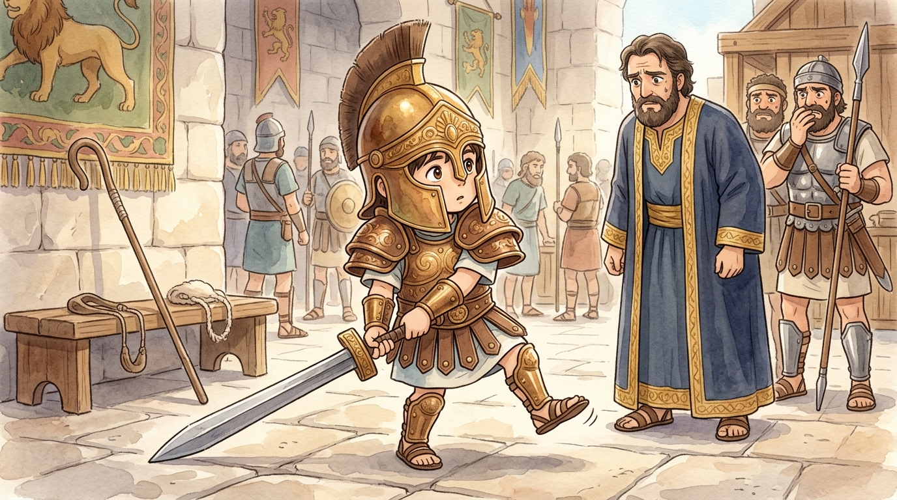
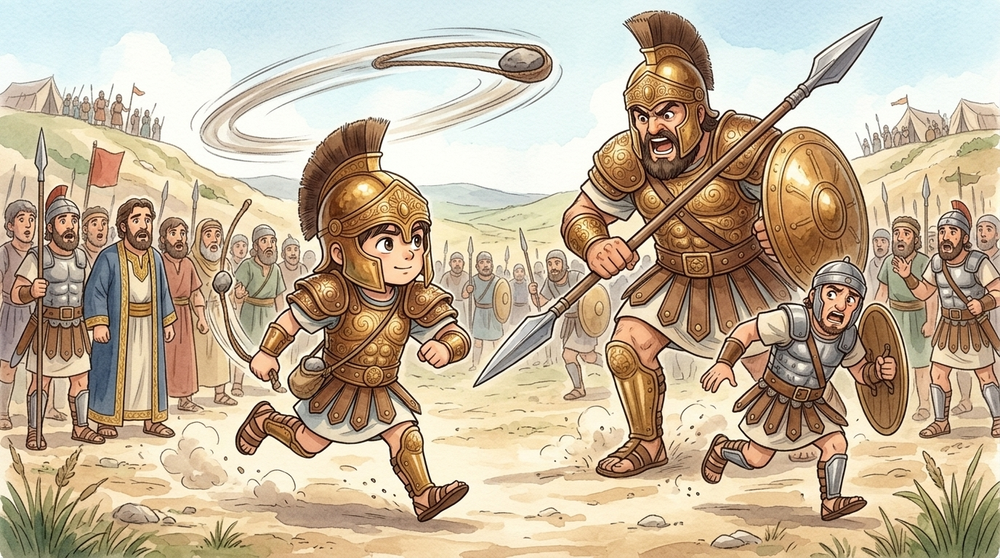
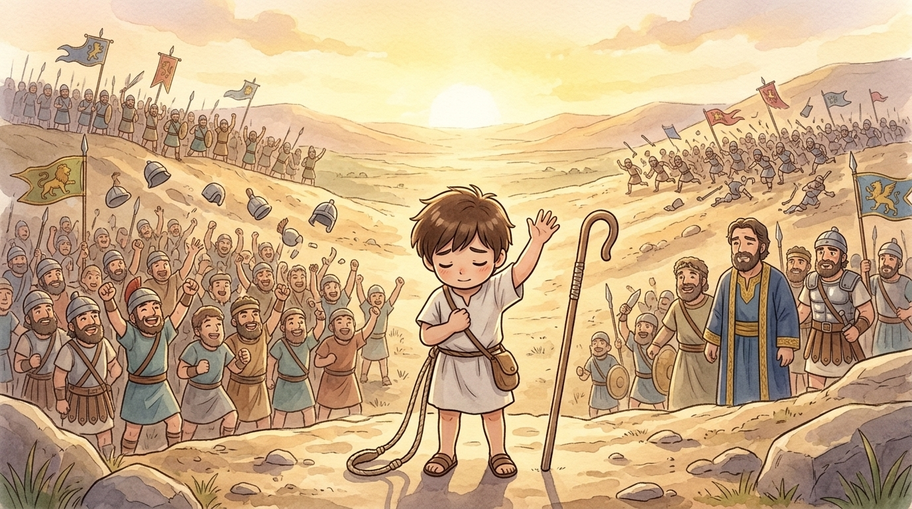

Ahem. I am a stone. Small, smooth, brook-polished — you would walk past me without a glance. For a thousand years I lay in a stream in the Valley of Elah, and nothing whatsoever happened to me. Then one morning a shepherd boy's hand closed around me, and I found myself in the middle of the most famous showdown in history.1 Stones have long memories. Here is exactly how it happened.
🪨 Forty days of thunder
Two armies faced each other across my valley — Israel on one hill, the Philistines on the other. And every morning and every evening, out of the Philistine camp stomped the largest human being anyone had ever seen: Goliath of Gath, taller than your front door with room to spare, wearing bronze armor that weighed as much as a grown man.2 His spear was like a fence post. Even his SHIELD had its own carrier, walking in front like a nervous waiter.
And twice a day, every day, the entire army of Israel went very quiet and studied its sandals. Forty days. Eighty challenges. Zero volunteers. Even King Saul — who stood head and shoulders above every man in Israel, mind you — stayed in his tent. The bravest soldiers in the nation had all done the same arithmetic: giant + armor + spear = run away.
🪨 The sandwich delivery that changed history
Enter, of all things, a delivery boy. David, youngest of eight, was too young for the army — his job was watching sheep, and today, bringing bread and cheese to his three soldier brothers. He arrived just in time to hear the morning thunder: "I DEFY THE ARMIES OF ISRAEL!" — and watched a thousand grown soldiers flinch.
But David, dear listener, did different arithmetic. The soldiers measured Goliath against themselves — and felt tiny. David measured Goliath against God — and, well, have you ever seen a giant stand next to the Maker of mountains?
"Who is this Philistine, that he should defy the armies of the living God? Out with the sheep, when a lion came, and a bear, the LORD rescued me from them both. He will rescue me from this giant too."
His oldest brother told him to go home. (Older brothers, I have observed from my brook, say things like that.) But word reached King Saul, who sent for the boy — and then tried to solve the problem the grown-up way: he dressed David in his own royal armor. Helmet. Coat of bronze. Great sword. David took one wobbling step, clanking like a kitchen falling downstairs, and stopped.

🪨 Five of us
A hand plunged into my cool stream and chose five smooth stones — myself and four colleagues — and dropped us into a shepherd's bag. I'll not pretend I understood. A sling, a staff, five stones, one boy: this was the arsenal marching down to meet the largest warrior on earth. But the boy's heart, I could feel it through the leather, was not pounding with fear. It was perfectly, strangely calm.3
Goliath looked at the shepherd boy walking toward him and — I felt the ground shake — laughed. "Am I a DOG, that you come at me with sticks? Come here, boy, and I'll feed you to the birds!" And then David answered, and his voice carried up both hillsides, and forty days of silence broke at once. Learn this speech, dear listener. It is the whole story:
🪨 My moment
The giant roared and charged, shield-bearer scrambling. And David — this is the part nobody expects — ran TOWARD him. Mid-stride, his hand found me in the bag, set me in the sling's leather pocket, and then the whole world became a spinning blur of sky-valley-sky-valley — shepherds, you understand, practice this ten thousand times, guarding sheep from wolves; a slung stone flies as fast as anything on a battlefield4 — and then release.
I flew straighter than I have ever flown. One gap in all that bronze — the forehead below the helmet's rim — and I struck it true. The giant of Gath swayed like a chopped tree, and fell face-down with a crash that echoed off both hills. And that was the end of him, and I shall say no more of it than that — I am a polite stone. For one heartbeat, both armies stood in perfect silence. Then Israel's hillside erupted in a roar of joy, and the Philistine army turned and ran for the coast without stopping for lunch.

🪨 What the stone knows
They tell my story everywhere now, and mostly they tell it a little bit wrong. They call it the day a small boy beat a big man — as if the lesson were "be brave and you can do anything." But I was THERE, in the sling. David never once said "I can do this." He said "The LORD will do this." His courage wasn't the puffed-up kind that comes from thinking you're strong. It was the quiet kind that comes from knowing God is strong — the same God who had already walked with him through lion nights and bear mornings nobody ever saw or applauded.
That shepherd boy grew up to be Israel's greatest king, and a thousand years later, in his hometown of Bethlehem, his family line led to a baby in a manger.5 But that is another story, and I am only a stone.

So when a giant plants itself in YOUR valley — a test that looks unpassable, a fear the size of a front door, a problem everyone says can't be beaten — remember what the stone remembers. Don't measure the giant against yourself; you'll always come up small. Measure it against God. Face it with what He gave you, practiced in the quiet days when nobody was watching. And run toward it, not away. The battle, little listener, is the LORD's. 🪨